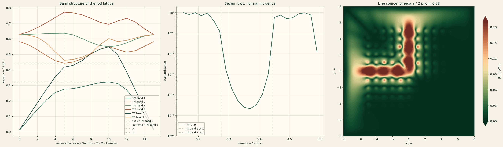
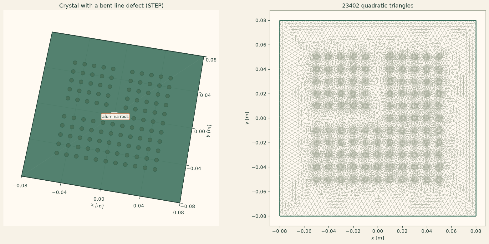

Docs › Examples › Photonic crystal: band gap and bent waveguide
Wave optics, photonic crystals · 2D
Photonic crystal: band gap and bent waveguide
A square lattice of alumina rods forbids TM waves in a band of frequencies, and a bent row of missing rods guides the wave around a sharp corner.
Run locally with OneSimulation. The example downloads are free. Running them requires an activated runtime. Runtime Alpha 0.2.1a7 · CPython 3.13 on macOS (Apple Silicon), Ubuntu 22.04 (x86-64), and Windows x64. Installation and activation · View pilot plans. Scope of the reference checks.


What it computes
OneSimulation cuts the unit cell, a seven-row slab period and an 11 x 11 crystal with a bent line defect from STEP plates and solves the out-of-plane field with quadratic triangles: harmonic_resonances on the Bloch-periodic unit cell gives the band structure along Gamma-X-M, Floquet ports give the transmission of the slab, and a line current in the defect, surrounded by perfectly matched layers, shows the guided wave. The script that builds the STEP file comes with the notebook.
What it checks
The computed complete TM gap runs from 0.322 to 0.443 (omega a / 2 pi c), 31.4 % of midgap, as the literature reports for epsilon = 8.9 and r = 0.2a (about 0.32 to 0.44, 31 %), and there is no TE gap; seven rows transmit less than 1 % from 0.29 to 0.43 (sweep step 0.02, minimum 2e-5) against the stop band 0.275 to 0.443 of the bands at X, and inside the gap the intensity at the end of the bent arm is 43 dB above that behind the intact crystal.
Geometry
The notebook starts at the import of the CAD files photonic_crystal_band_gap.step, photonic_crystal_band_gap_cell.step, photonic_crystal_band_gap_cell_rod.step, photonic_crystal_band_gap_column.step, photonic_crystal_band_gap_column_rods.step, photonic_crystal_band_gap_rods.step: STEP (AP242), readable by any CAD program, with the names of the faces that the boundary conditions use. Put them next to the notebook.


The geometry script
The script photonic_crystal_band_gap_geometry.py builds the geometry with the CAD objects of OneSimulation and writes the files. Change a dimension there, run it, and run the notebook again.
"""Geometry of the OneSimulation example "Photonic crystal of dielectric rods".
Builds with the CAD objects of OneSimulation, as plates 1 mm thick, a square lattice (a = 10 mm) of
alumina rods of radius 2 mm:
* photonic_crystal_band_gap_cell.step and _cell_rod.step: the unit cell and its rod,
* photonic_crystal_band_gap_column.step and _column_rods.step: one period of a slab seven rows
thick with air above and below (faces x_min, x_max periodic, y_min, y_max ports),
* photonic_crystal_band_gap.step and _rods.step: an 11 x 11 crystal with a waveguide bent by 90
degrees (a row and a column of missing rods) in air with room for absorbing layers.
"""
from onesim.cad.d3 import Box, Cylinder, TablePattern
a, radius, thickness = 0.01, 0.002, 0.001
rod = lambda x, y: Cylinder(origin=(x, y, 0.0), radius=radius, length=thickness)
Box(origin=(-a / 2, -a / 2, 0.0), length=a, width=a, height=thickness).save(
"photonic_crystal_band_gap_cell.step"
)
rod(0.0, 0.0).save("photonic_crystal_band_gap_cell_rod.step")
Box(origin=(-a / 2, -5.5 * a, 0.0), length=a, width=11 * a, height=thickness).save(
"photonic_crystal_band_gap_column.step"
)
TablePattern(rod(0.0, -3 * a), [(0.0, j * a, 0.0) for j in range(1, 7)]).save(
"photonic_crystal_band_gap_column_rods.step"
)
Box(origin=(-8 * a, -8 * a, 0.0), length=16 * a, width=16 * a, height=thickness).save(
"photonic_crystal_band_gap.step"
)
channel = {(i, 0) for i in range(-5, 1)} | {(0, j) for j in range(0, 6)}
TablePattern(
rod(-5 * a, -5 * a),
[
((i + 5) * a, (j + 5) * a, 0.0)
for i in range(-5, 6)
for j in range(-5, 6)
if (i, j) not in channel | {(-5, -5)}
],
).save("photonic_crystal_band_gap_rods.step")The notebook
The complete notebook, cell by cell. Run it to produce the figures and the comparison printout.
Alumina rods (\(\varepsilon_r=8.9\)) of radius \(r=0.2a\) stand on a square lattice of period \(a=10\) mm. For waves with the electric field along the rods (TM, \(E_z\) out of the section) the periodic structure has a complete band gap: no wave of a frequency in the gap can travel through the crystal in any direction. A line of missing rods is then a waveguide whose walls are perfect mirrors, and it can bend sharply without losing the wave.
Three models on sections of the STEP parts:
- Bands. On the unit cell the field is Bloch periodic, \(u(\mathbf x+\mathbf a)=u(\mathbf x)\,e^{\mathrm i\mathbf k\cdot\mathbf a}\), and for every wavevector \(\mathbf k\) along the edge \(\Gamma\!-\!X\!-\!M\!-\!\Gamma\) of the irreducible Brillouin zone the resonances of the cell are the frequencies of the bands.
- Transmission. One period of a slab seven rows thick, with Bloch periodic sides and Floquet ports above and below, transmits a plane wave travelling along \(\Gamma X\).
- Bent waveguide. In an 11 x 11 crystal a row and a column of rods are missing; a line current sits in the horizontal arm, and perfectly matched layers absorb what leaves the crystal.
| model | boundaries |
|---|---|
| unit cell | x_min/x_max and y_min/y_max Bloch periodic with \(\mathbf k\) |
| slab | x_min/x_max periodic, y_max Floquet port with the incident wave, y_min Floquet port |
| crystal | perfect conductor behind a PML of 15 mm |
Reference. J. D. Joannopoulos, S. G. Johnson, J. N. Winn and R. D. Meade, Photonic Crystals: Molding the Flow of Light, 2nd ed., Princeton 2008, chapter 5: this lattice of dielectric columns (\(\varepsilon=8.9\), \(r=0.2a\)) has a complete TM gap between the first and the second band, from \(\omega a/2\pi c\approx0.32\) to \(0.44\) (31 % of the midgap frequency), and no TE gap. Along \(\Gamma X\) alone the stop band of the slab must open between the first and the second band at \(X\).
import numpy as np
from onesim.cad.exchange import load
from onesim.materials import VACUUM_PERMEABILITY, VACUUM_PERMITTIVITY
from onesim.materials.electromagnetic import (
CartesianPML,
IsotropicElectromagneticMaterial,
RegionwiseElectromagneticMaterial,
)
from onesim.meshing import PeriodicPair, TriangularMesher
from onesim.numerics import Numerics
from onesim.numerics.fem import FiniteElement, Lagrange
from onesim.numerics.linear import ComplexSparseDirect
from onesim.physics.electromagnetics import (
BlochPeriodicBoundary,
FloquetPort,
FrequencyDomainMaxwell,
PerfectElectricConductor,
diffraction_efficiencies,
harmonic_resonances,
)
from onesim.simulation import Problem, Simulation
from onesim.visualization import plots, theme
theme.set()
a = 0.01
light = 1 / np.sqrt(VACUUM_PERMEABILITY * VACUUM_PERMITTIVITY)Geometry and mesh
load reads the three air regions and their rods; section cuts the air at half thickness and sections returns the separate discs of the rods. The meshes follow the rods; the sides of the unit cell and of the slab period are divided alike so that the nodes of periodic sides match.
solids = {
name: load(f"photonic_crystal_band_gap{name}.step")
for name in ("", "_rods", "_cell", "_cell_rod", "_column", "_column_rods")
}
section = lambda name: solids[name].section((0, 0, 1), origin=(0, 0, 0.5e-3))
cell, column, crystal = section("_cell"), section("_column"), section("")
rods = {
name: tuple(
piece.named("rods")
for piece in solids[name].sections((0, 0, 1), origin=(0, 0, 0.5e-3))
)
for name in ("_cell_rod", "_column_rods", "_rods")
}
meshes = {
"cell": TriangularMesher(
target_size=0.5e-3,
embedded_regions=rods["_cell_rod"],
region_sizes={"rods": 0.4e-3},
curvature_angle=0.5,
hard_sizes={side: 0.5e-3 for side in ("x_min", "x_max", "y_min", "y_max")},
).generate(cell),
"slab": TriangularMesher(
target_size=1.5e-3,
embedded_regions=rods["_column_rods"],
region_sizes={"rods": 0.8e-3},
curvature_angle=0.5,
hard_sizes={"x_min": 1.5e-3, "x_max": 1.5e-3},
).generate(column),
"crystal": TriangularMesher(
target_size=3e-3,
embedded_regions=rods["_rods"],
region_sizes={"rods": 1.1e-3},
curvature_angle=0.5,
minimum_size=0.6e-3,
grading=0.5,
).generate(crystal),
}
fig = plots.figure(1, 2, size=(15, 7))
plots.geometry(
[solids[""].named("air"), solids["_rods"].named("alumina rods")],
camera=plots.Camera(elevation=70, azimuth=-80),
title="Crystal with a bent line defect (STEP)",
ax=fig[0],
)
plots.mesh(
meshes["crystal"],
groups=("all",),
legend=False,
title=f"{meshes['crystal'].cell_count} quadratic triangles",
ax=fig[1],
)
plots.show()Band structure
16 wavevectors along \(\Gamma\!-\!X\!-\!M\!-\!\Gamma\); at each the four lowest resonances of the cell for both polarizations. The path stops 3 % short of \(\Gamma\), where the first band starts at zero frequency.
material = RegionwiseElectromagneticMaterial(
{"rods": IsotropicElectromagneticMaterial(relative_permittivity=8.9)},
default=IsotropicElectromagneticMaterial(),
)
numerics = Numerics(
spatial=FiniteElement(element=Lagrange(order=2)),
linear_solver=ComplexSparseDirect(),
)
model = lambda region, polarization, frequency, medium=material, **options: FrequencyDomainMaxwell(
domain=region.domain(),
frequency=frequency,
material=medium,
polarization=polarization,
phasor_convention="exp(-i*omega*t)",
amplitude_convention="peak",
**options,
)
corners = np.array([[0.03, 0.0], [1.0, 0.0], [1.0, 1.0], [0.03, 0.03]]) * np.pi / a
path = np.concatenate(
[np.linspace(corners[i], corners[i + 1], 6)[:-1] for i in range(3)] + [corners[-1:]]
)
cell_sides = cell.boundaries
cell_problem = lambda m, k: Problem(
name="Unit cell",
geometry=cell,
physics=(m,),
boundary_conditions=tuple(
BlochPeriodicBoundary(
physics=m,
pair=PeriodicPair(cell_sides[f"{axis}_min"], cell_sides[f"{axis}_max"]),
wavevector=(*k, 0.0),
)
for axis in "xy"
),
)
resonances = lambda m, k: harmonic_resonances(
Simulation(
problem=cell_problem(m, k), mesh=meshes["cell"], numerics=numerics
).solve_stationary(),
m,
count=6,
near=1e8,
)
bands = {
polarization: np.array(
[
[f.real * a / light for f in resonances(m, k) if f.real * a / light > 1e-3][
:4
]
for k in path
for m in [model(cell, polarization, 10e9)]
]
)
for polarization in ("Ez", "Hz")
}
gap = (bands["Ez"][:, 0].max(), bands["Ez"][:, 1].min())
print(
f"TM: band 1 up to {gap[0]:.4f}, band 2 from {gap[1]:.4f} (omega a / 2 pi c): complete gap {gap[0]:.3f} - {gap[1]:.3f}, "
f"{2 * (gap[1] - gap[0]) / (gap[1] + gap[0]):.1%} of midgap (reference about 0.32 - 0.44, 31 %)"
)
print(
f"TE: band 1 up to {bands['Hz'][:, 0].max():.4f}, band 2 from {bands['Hz'][:, 1].min():.4f}: "
f"{'no complete gap' if bands['Hz'][:, 1].min() < bands['Hz'][:, 0].max() else 'gap'}"
)
print(
f"at X: TM bands 1 and 2 at {bands['Ez'][5, 0]:.4f} and {bands['Ez'][5, 1]:.4f}, TE at {bands['Hz'][5, 0]:.4f} and {bands['Hz'][5, 1]:.4f}"
)Transmission through seven rows
The slab period is swept for the TM wave in normalized frequency from 0.15 to 0.59 in steps of 0.02, with the wave at normal incidence (\(\Gamma X\)).
normalized = np.arange(0.15, 0.6001, 0.02)
slab_sides = column.boundaries
slab_problem = lambda m: Problem(
name="Seven rows",
geometry=column,
physics=(m,),
boundary_conditions=(
BlochPeriodicBoundary(
physics=m,
pair=PeriodicPair(slab_sides.x_min, slab_sides.x_max),
wavevector=(0.0, 0.0, 0.0),
),
FloquetPort(physics=m, boundary=slab_sides.y_max, incident_amplitude=1.0),
FloquetPort(physics=m, boundary=slab_sides.y_min),
),
)
transmitted = lambda m: diffraction_efficiencies(
Simulation(
problem=slab_problem(m), mesh=meshes["slab"], numerics=numerics
).solve_stationary(),
m,
)[(1, 0)]
transmission = np.array(
[transmitted(model(column, "Ez", nu * light / a)) for nu in normalized]
)
blocked = normalized[transmission < 1e-2]
print(
f"TM: transmission below 1 % from {blocked.min():.2f} to {blocked.max():.2f} (sweep step 0.02); stop band at X from the bands "
f"{bands['Ez'][5, 0]:.3f} - {bands['Ez'][5, 1]:.3f}; smallest transmission {transmission.min():.1e}"
)Bent waveguide
A Gaussian line current in the horizontal arm, at a frequency inside the TM gap (0.38). The damping of the PML grows quadratically over the outer 15 mm. The intensity at the end of the vertical arm is compared with that at the same distance from the centre on the right, where the crystal is intact.
damping = lambda omega: (
lambda x, y, z: np.column_stack(
(
3 * omega * np.clip((np.abs(x) - 6.5 * a) / (1.5 * a), 0, None) ** 2,
3 * omega * np.clip((np.abs(y) - 6.5 * a) / (1.5 * a), 0, None) ** 2,
0 * x,
)
)
)
source = lambda x, y, z: np.column_stack(
(0 * x, 0 * x, np.exp(-((x + 3 * a) ** 2 + y**2) / (2 * (0.1 * a) ** 2)))
).astype(complex)
crystal_problem = lambda m: Problem(
name="Bent waveguide",
geometry=crystal,
physics=(m,),
boundary_conditions=(
PerfectElectricConductor(physics=m, boundary=crystal.boundaries.all),
),
)
source_field = (
lambda m: Simulation(
problem=crystal_problem(m), mesh=meshes["crystal"], numerics=numerics
)
.solve_stationary()
.field(m.electric_field)
)
fields = {
nu: source_field(
model(
crystal,
"Ez",
nu * light / a,
medium=CartesianPML(
material=material, damping=damping(2 * np.pi * nu * light / a)
),
impressed_current=source,
)
)
for nu in (0.38,)
}
probe = lambda field, centre: np.mean(
np.abs(
field.evaluate(
np.asarray(centre)
+ 0.4 * a * np.random.default_rng(1).uniform(-1, 1, (50, 2))
)[:, 2]
)
** 2
)
for nu, field in fields.items():
print(
f"omega a / 2 pi c = {nu}: intensity at the end of the bent arm / on the right of the crystal = "
f"{10 * np.log10(probe(field, (0.0, 6.0 * a)) / probe(field, (6.0 * a, 0.0))):+.1f} dB"
)Figure
The band diagram with the complete TM gap, the transmission of the seven rows on a logarithmic scale with the band edges at \(X\) marked, and the field of the source inside the gap.
fig = plots.figure(1, 3, size=(24, 7))
plots.line(
np.arange(len(path)),
{f"TM band {n + 1}": bands["Ez"][:, n] for n in range(4)}
| {f"TE band {n + 1}": bands["Hz"][:, n] for n in range(2)},
hlines={"top of TM band 1": gap[0], "bottom of TM band 2": gap[1]},
vlines={"X": 5, "M": 10},
xlabel="wavevector along Gamma - X - M - Gamma",
ylabel="omega a / 2 pi c",
title="Band structure of the rod lattice",
legend="lower right",
ax=fig[0],
)
plots.line(
normalized,
{"TM (E_z)": transmission},
scale="logy",
ylimits=(1e-6, 2),
vlines={"TM band 1 at X": bands["Ez"][5, 0], "TM band 2 at X": bands["Ez"][5, 1]},
xlabel="omega a / 2 pi c",
ylabel="transmittance",
title="Seven rows, normal incidence",
legend="lower left",
ax=fig[1],
)
for panel, (nu, field) in zip((fig[2],), fields.items()):
x, y = np.asarray(meshes["crystal"].coordinates).T
values = np.abs(field.evaluate(np.column_stack((x, y)))[:, 2])
plots.heatmap(
x / a,
y / a,
values,
triangles=np.asarray(meshes["crystal"].cells),
limits=(0, np.percentile(values, 99)),
label="|E_z| [V/m]",
xlabel="x / a",
ylabel="y / a",
title=f"Line source, omega a / 2 pi c = {nu}",
ax=panel,
)
plots.show()Going further
Remove a single rod inside the intact crystal: the defect holds a localized mode whose frequency lies in the gap and can be found with harmonic_resonances on the crystal with metal walls. Change the rod radius in photonic_crystal_band_gap_geometry.py to see how the gap opens and closes.